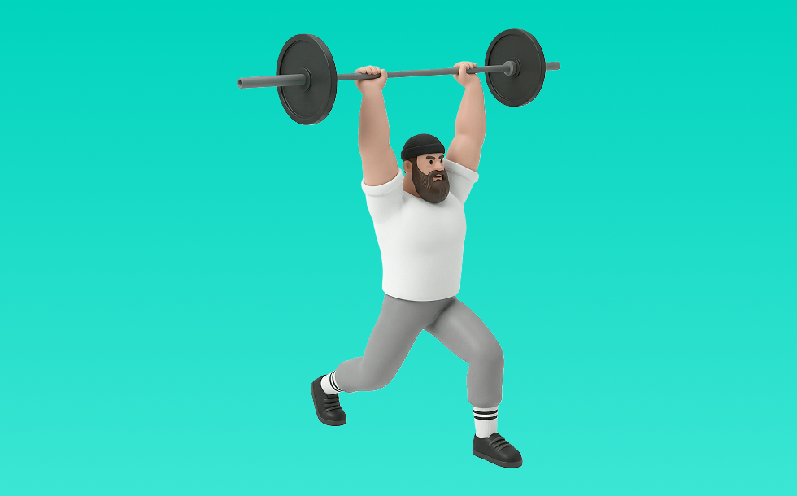

クリーン&ジャーク

クリーン&ジャークとは、バーベルを使って「動かす」動作で背中（広背筋、僧帽筋、菱形筋）＋腕（上腕二頭筋）を鍛える種目です。全身の連動と瞬発力が求められるのが特徴で、反動を抑えてコントロールしながら反復します。瞬発力と全身連動の向上が期待できます。
- 対象部位
- 背中
- 器具
- バーベル
- 記録形式
- 重量・回数
- 別名
- C&J
YouTube動画
-
ジャーク徹底解説｜腕の脱力を極めよう！
-
パワークリーン・クリーン徹底ガイド：パート1 姿勢と柔軟性
-
ジャーク徹底ガイド：パート1 姿勢と柔軟性
-
【クリーン&ジャーク】9割の人がこのトレーニングの意味を知らない
-
クリーンとスナッチの練習方法
-
【特に陸上選手には見てほしい】正しいクリーンのやり方
-
【クリーン＆ジャーク】自分のフォームとやり方を解説！
-
パワースナッチ・スナッチ徹底ガイド：パート1 姿勢と柔軟性
-
クリーン＆ジャークのテクニックトレーニング
-
クリーン&ジャークが上達するテクニックを習ったのでお裾分け！
-
ジャーク（プッシュプレス/プッシュジャーク）完全教科書マニュアル（1から10までフォームと手順を全部解説）push press/push jerk
-
【本間智也が徹底解説】無駄なく挙げるためのテクニック-ジャーク編
-
オリンピックリフティング（クリーン、スナッチ、ジャーク）の実技を徹底指導！
-
パワークリーン・クリーン徹底ガイド：パート２ プル
-
【筋トレ】ジャーク 解説講座 【フォーム】【初心者】
-
【超有料級】山本俊樹選手に教わるウエイトリフティング!!(クリーン編) セカンドプルで最大のパワーを出すには...!? 苦手部分を克服するための練習方法も徹底解説!!
-
【ジャークディップ】やり方と注意点！
-
【特に陸上選手には見てほしい】正しいスナッチのやり方
YouTubeショート
-
Clean Pull 【本当にクリーンが爆伸び！クリーンプルのやり方】 #ウエイトリフティング #weightlifting #トレーニング #瞬発力 #crossfit #シバター#矢地祐介
-
クリーン&ジャーク フォーム練習
-
アジア選手権優勝!｜宮本（73kg)191kgクリーン＆ジャーク
-
ハングクリーン綺麗すぎ山縣さん#筋トレ #山縣亮太
-
クリーンワンポイントアドバイス！#ウエイトリフティング #フィジカルトレーニング#ハイクリーン#クロスフィット
-
パワークリーン90kg Power Clean
-
ポイント解説編【クリーンジャーク120キロ目指して】リハビリDay1 #クロスフィット #ウエイトリフティング #weightlifting #クリーン #トレーニング
-
【ジャンプ力アップ】スクワットクリーン+ジャーク #jerk #clean #パワークリーン
-
Powerclean 【パワークリーン日記】ポイント解説 #パフォーマンスアップ #クロスフィット #瞬発力 #ウエイトリフティング
-
鬼の瞬発トレーニング！100kgクリーン連続10回
-
「クリーンVSスナッチ」どちらが良いのか？ #楽トレチャンネル #ストレングストレーニングを日本の主流に #ウエイトリフティング
-
パワークリーン&プッシュジャーク110kg(power clean & push jerk / 242lb)
-
【10分でスナッチをマスター】スナッチに必要な基本的な種目紹介！#ウエイトリフティング #weightlifting #クロスフィット #パフォーマンスアップ #瞬発力#ジャンプ
-
100㎏クリーン＆ジャーク
-
ハイクリーン＆ジャーク100kg
-
女子49kg級 クリーン＆ジャーク対決！
-
クリーン&ジャークの正しいやり方・コツまとめ【瞬発力】#Shorts
-
Strict Press 【ジャーク上手くなるならストリクトプレス】 #クロスフィット #トレーニング #ウエイトリフティング #fitness パフォーマンスアップのための種目を発信中！
-
ハイクリーン(パワークリーン)120kg power clean 264lb
-
バーとイメージを変えるだけでうまくなる【クリーンジャークの一言アドバイス】 #クロスフィット #ウエイトリフティング #パフォーマンスアップ #瞬発力
-
クリーン&ジャーク
-
ハンドクリーン
-
クリーン180kg［事故動画］閲覧注意
-
【筋力、爆発力アップ】80kg Clean Jerk #トレーニング #クロスフィット #ウエイトリフティング #瞬発力
-
中学生クリーン&ジャーク82キロ(スローモーション)
-
パワークリーン＆2ジャーク 82.5kg powerclean
-
Clean&Jerk 101kg 【ウエイトリフティング好きなS&C】クリーンポイント解説 #トレーニング #クロスフィット #weightlifting
-
クリーンの段階練習方法 #ウエイトトレーニング #クリーン初心者#weightlifting #筋トレ
動作方法
- ウォームアップで心拍を段階的に上げる
- 目的に合わせてペースを設定する
- 終了後はクールダウンで整える
動作ポイント
- 呼吸を止めない
- 開始直後に追い込みすぎない
ワンポイントアドバイス
- 腕ではなく背中で引く感覚を優先する
- 反動が増えたら重量を一段下げる
目的別回数設定
目的や体力に応じた一般的な目安です。無理のない範囲で調整してください。
- 筋力アップ
- 1〜5回
- 筋肥大
- 6〜12回
- 持久力アップ
- 13〜20回
YouTube動画について
動画はYouTubeの公開情報をもとに表示しています。内容は投稿者によるもので、Biggrによる監修ではありません。
アプリを入手
筋トレやトレーニングの記録はBiggrにお任せください。今すぐ無料で使い始められます。